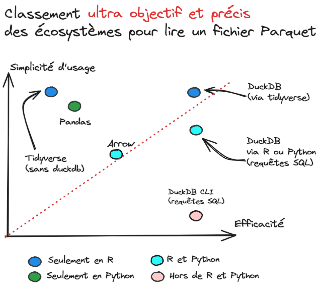

viewof source = Inputs.radio([
"Recensement", "Répertoire électoral unique"
], {value: "Recensement"})Le format de données Parquet
Une découverte à travers l’exemple des données du recensement
Slides présentant les enjeux de l’utilisation du format
Parquet et l’écosystème associé
Introduction
Plan
- Contexte
- Pourquoi le format
Parquet? - L’écosystème
Parquet - Démonstration
Contexte sur le recensement de la population
Le recensement de la population
- Mission historique de l’Insee depuis 1946
- L’Insee organise, les communes réalisent la collecte
. . .
- Une source d’utilité publique :
- Populations légales: dotations de l’État aux communes, organisation des scrutins, équipements publics, etc.
- Recherche: caractéristiques socio-démographiques, mobilités…
Enquêtes annuelles de recensement (EAR) depuis 2004
- Pour une commune de moins de 10 000 habitants:
- Collecte exhaustive une fois tous les 5 ans.
- Pour une commune de plus de 10 000 habitants:
- Chaque année, 8% des logements sont recensés ;
- Le résultat du recensement est calculé à partir des 5 dernières années (=40% logements)
Une diffusion sous plusieurs formes
- Diffusion sur insee.fr sous plusieurs formes:
- Pages “dynamiques” sur insee.fr
- Exports d’agrégats depuis statistiques-locales.insee.fr/
- Des données, des cartes, des publications, etc..
. . .
- Mais beaucoup de gestes manuels pour obtenir un seul agrégat
. . .
- Une information parfois difficile à trouver sur le site de l’Insee
Une diffusion sous plusieurs formes
Les fichiers agrégés
- Structure type: une ligne par commune ou IRIS
. . .
- Taille de chaque fichier relativement raisonnable
- CSV généralement de quelques Mo, jusqu’à 150 Mo

Une diffusion sous plusieurs formes
Les micro-données anonymisées
- Structure type: une ligne par observation
- Un logement, un individu…
. . .
- Permet de construire d’autres croisements que ceux proposés sur insee.fr
. . .
Un format destiné à des utilisateurs avancés
- Une source riche mais des précautions d’emploi à respecter:
- Pondérations à prendre en compte
- Interprétation des petits effectifs…
- Demande une certaine expertise
Défi
- Ce sont des fichiers très volumineux
- Jusqu’à 100 variables et 25 millions de lignes
- Fichier CSV jusqu’à 5 Go
. . .
- Pour l’Insee : complexes à produire et valider avant diffusion
. . .
- Pour l’utilisateur.trice : complexes à télécharger, stocker et exploiter
Solution historique
- Diffusion zippée (CSV) ou format DBase (format propriétaire)
- Découpage en fichiers par grandes zones de régions

Une source idéale pour innover dans la diffusion
- Montée en puissance du format
Parquetpour les usages internes à l’Insee:- Pourquoi ne pas offrir le même confort à l’externe ?
. . .
- Une demande d’utilisateurs.trices averti.e.s
- Par exemple Eric Mauvière
Une source idéale pour innover dans la diffusion
- Publication en octobre 2023 des données et d’un guide d’utilisation

Une source idéale pour innover dans la diffusion
- Un accueil enthousiaste des utilisateurs.trices


Une source idéale pour innover dans la diffusion
- D’autres institutions l’utilisent maintenant pour leur diffusion
Pourquoi le format Parquet ?
Parquet : c’est quoi ?
- Un format de données adapté…
- Aux données volumineuses ;
- Aux données complexes (exemple: 01004 pour le code commune d’Ambérieu-en-Bugey)
. . .
- Un format de données opensource bien intégré:
- A l’écosystème
R,PythonetObservable
- A l’écosystème
Parquet : pourquoi ?
- Format léger, très compressé:
- Entre 5 et 20 fois plus léger qu’un CSV
- Pas de perte d’efficacité en lecture
Exemple: recensement de la population
- 20 millions de lignes, 88 colonnes
- CSV: > 5Go
- Parquet: 508Mo
Exemple: statistiques de la délinquance
- 3.5 millions de lignes:
- CSV: 400Mo
- Parquet: 11Mo
Le CSV: en apparence pratique
- Facile à lire, facile à ouvrir, mais

Problème: il faut scanner tout le fichier pour avoir une seule colonne
- Lent en lecture, pas compressé
- Problème pour deviner le type d’une variable
- Même si on ne veut que certaines colonnes, il faut lire tout le fichier
Parquet: un format orienté colonne

- Plus pratique pour n’ouvrir qu’un sous-ensemble de variables ;
- Pas besoin de scanner tout le fichier pour étudier quelques variables ;
Parquet : quels avantages ?
- Format libre, open source, et indépendant du langage ;
. . .
- Plus de confort pour les utilisateurs:
- Des requêtes plus rapides et efficaces (seulement les données nécessaires sont lues)
- Des données conformes à la mise à disposition par le producteur (plus de problème de codes communes…)
Parquet : quels usages ?
- Format privilégié pour la mise à disposition de données internes à l’Insee:
- Moins d’asymétries entre utilisateurs et producteurs.
Premières diffusions à l’externe
- Bureaux de votes du répertoire électoral unique (REU):
- Recensement de la population (RP)
- Plus récemment, la base permanente des équipements (BPE)
Parquet : quels usages ?
Inputs.table(data)data = (source == "Recensement") ? rp : reudb = DuckDBClient.of({})
rp = db.query(
"SELECT AGED, CATL, SEXE, CANTVILLE, IPONDI FROM read_parquet('https://static.data.gouv.fr/resources/recensement-de-la-population-fichiers-detail-individus-localises-au-canton-ou-ville-2020-1/20231023-122841/fd-indcvi-2020.parquet') LIMIT 5"
)
reu = db.query(
"SELECT geo_adresse, id_brut_bv_reu FROM read_parquet('https://static.data.gouv.fr/resources/bureaux-de-vote-et-adresses-de-leurs-electeurs/20230626-135723/table-adresses-reu.parquet') LIMIT 5"
)Pourquoi DuckDB ?
Parquetne résout pas tout:- L’espace disque est optimisé
- Les données décompressées doivent passer en RAM
❓️ Comment analyser ces données sur un PC avec 8 GB de RAM ?
Pourquoi DuckDB ?

Pourquoi DuckDB ?
DuckDBest un utilitaire open source- Un logiciel en ligne de commande tout simple (20Mo)…
- Des librairies , et
Observablepour simplifier l’usage - Requêtes SQL mais aussi intégration
tidyversepour

. . .
DuckDBest très efficace:- Moteur SQL enrichi avec des fonctions très pratiques pour l’analyse
- Optimisations automatiques
- Visualisations sans exécuter sur toute la base
. . .
💡 Les avantages du monde des bases de données sans ses inconvénients
Démonstrations
Reproductibilité des exemples
- Plateforme de data science développée par l’Insee
- Environnements standardisés ,
- Accessible aux chercheurs.euses pour l’enseignement 😉
- Environnements préconfigurés lançables en 1 clic:


Astuce
Si vous avez un compte, n’hésitez pas à essayer les exemples présentés en live !
Idées
- Tuto ssphub
- Faire une carte des résidences secondaires en France
- Modes de transport
- Distribution par âge